What if your glucose monitor could tell you what happens next?
GluSight explores how predictive insights can help people understand their glucose levels and anticipate what's next.
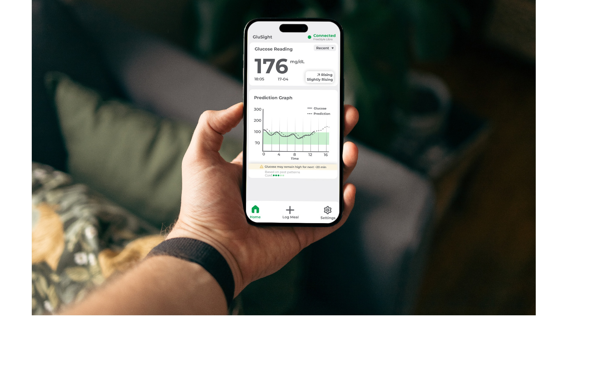
Living with diabetes is an ongoing balancing act.
Not knowing what comes next can make every glucose reading feel uncertain, adding anxiety to an already demanding daily routine.
This was my initial hypothesis, drawn from personal experience.
Understanding people behind the numbers
My experience was only one perspective. I looked beyond my own assumptions to understand how others monitor, interpret, and navigate the uncertainties of living with diabetes.
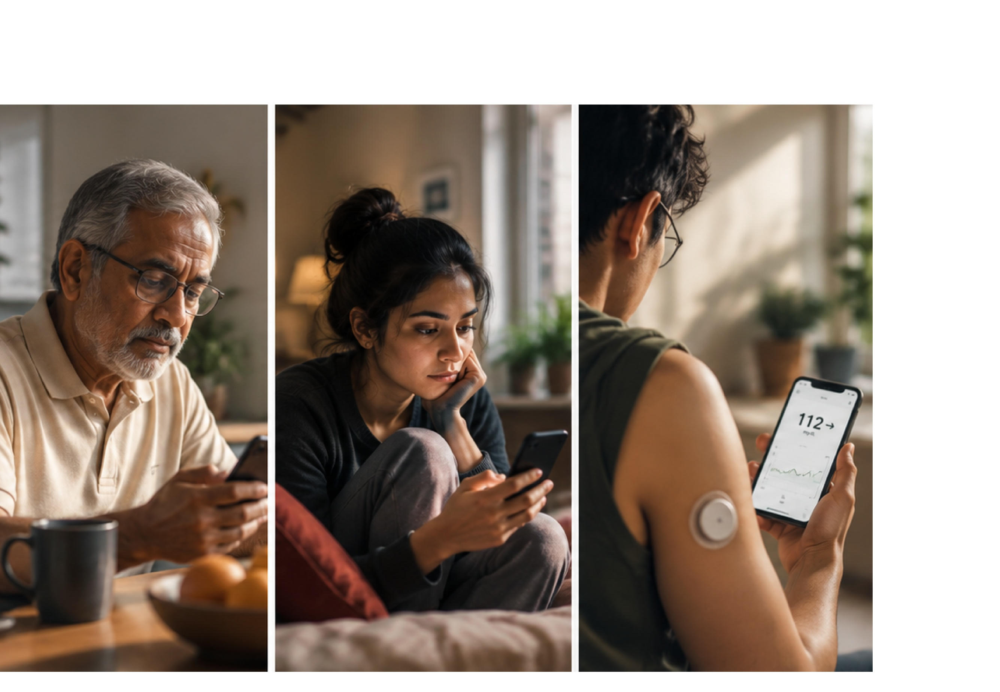
Beyond My Own Experience
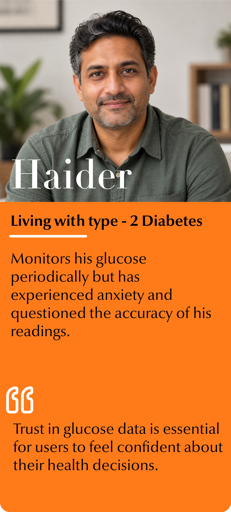
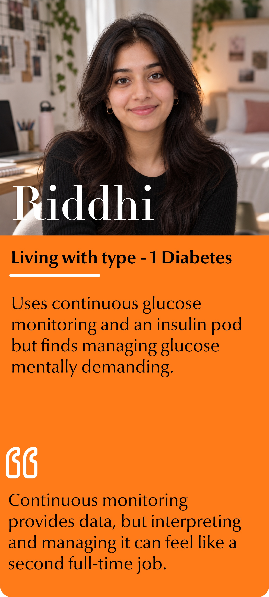
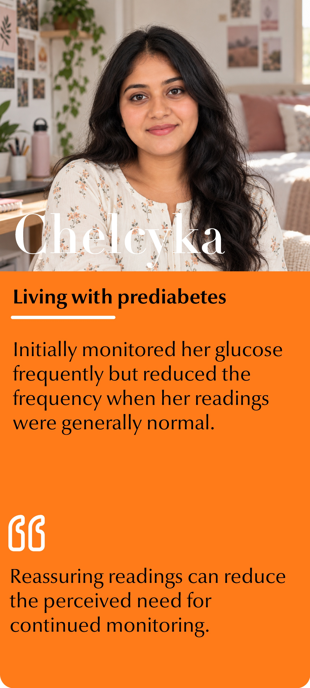
Understanding the Language of Glucose
Continuous glucose monitoring in adults with type 2 diabetes: a systematic review and meta-analysis
The review found that CGM improved glucose control in adults with type 2 diabetes, reducing HbA1c levels and increasing time spent within the target glucose range.
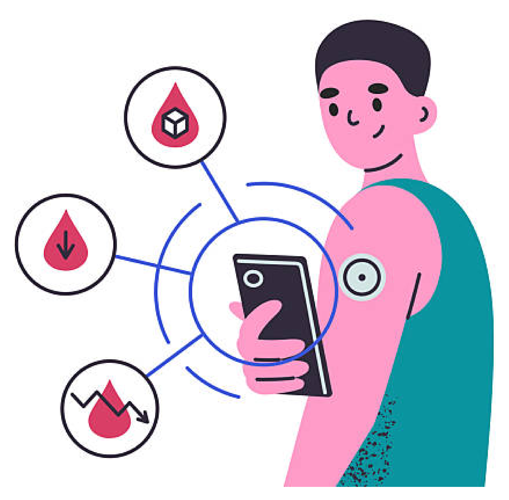
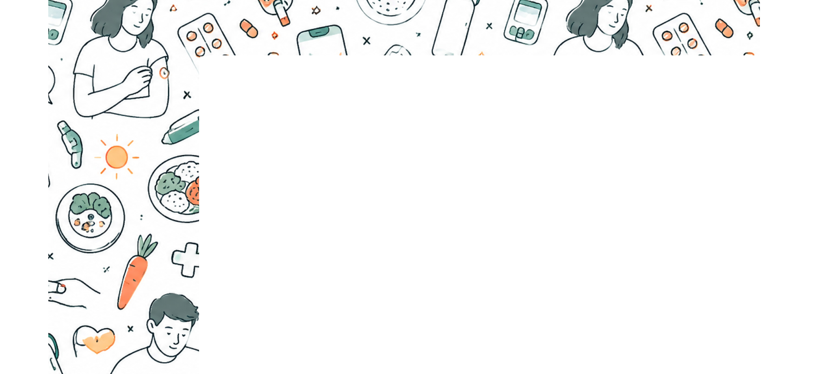
Your Glucose Is Always Responding
Glycemic variability: Importance, relationship with physical activity, and the influence of exercise
Glucose levels fluctuate with daily activities, particularly physical activity and exercise, which influence glycemic variability.
Having the numbers doesn't mean having the answers
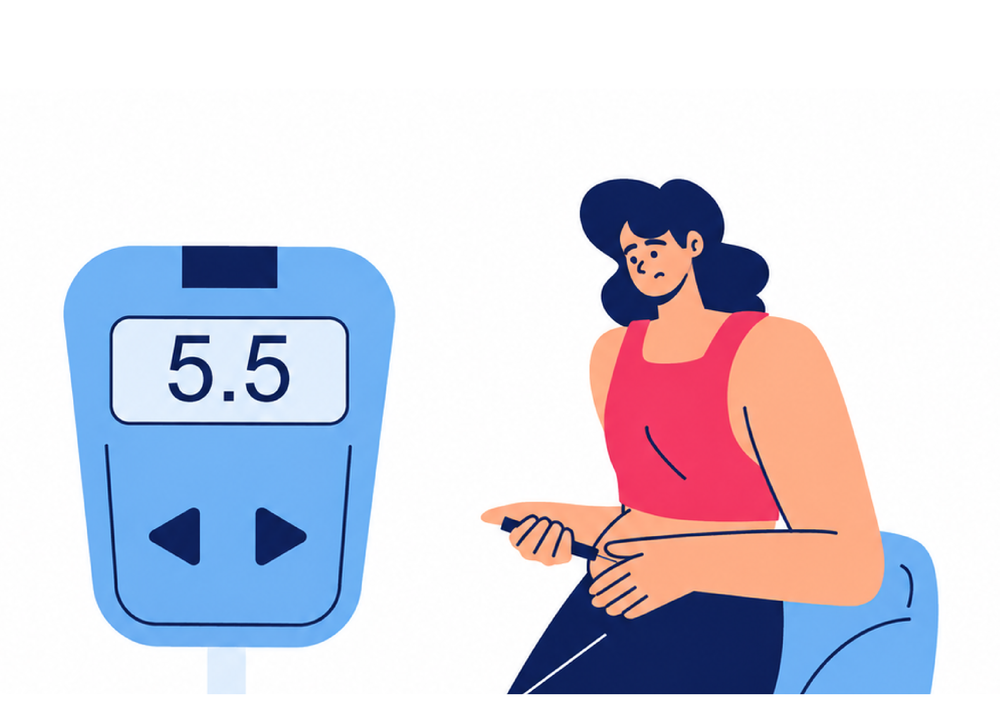
Patient-Reported Usefulness and Challenges in Using Hypoglycemia-Informing Features of Continuous Glucose Monitors to Manage Hypoglycemia
Glucose levels fluctuate throughout the day in response to changing behaviours and physiological processes. Meals, physical activity and periods of rest all shape how the body manages energy.
Anticipating Glucose Fluctuations
Improved Real-World Glycemic Control With Continuous Glucose Monitoring System Predictive Alerts
Predictive glucose alerts help users anticipate glucose fluctuations and respond before levels become extreme.
What do the numbers tell us?
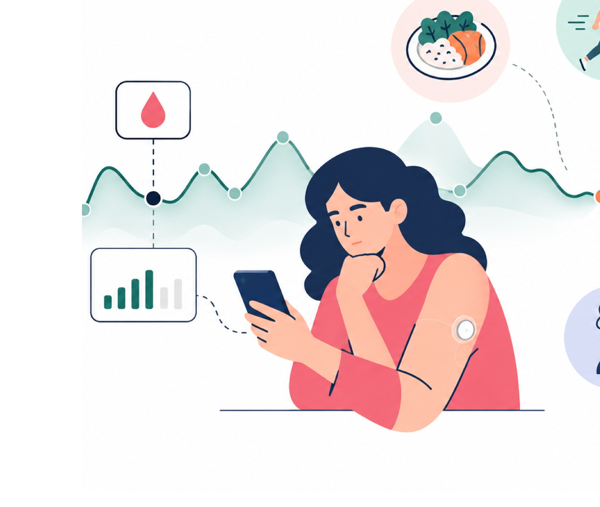
By combining user interviews and secondary research, I identified patterns in how people monitor, interpret, and respond to glucose information, revealing opportunities to improve the experience.
A pattern was discovered
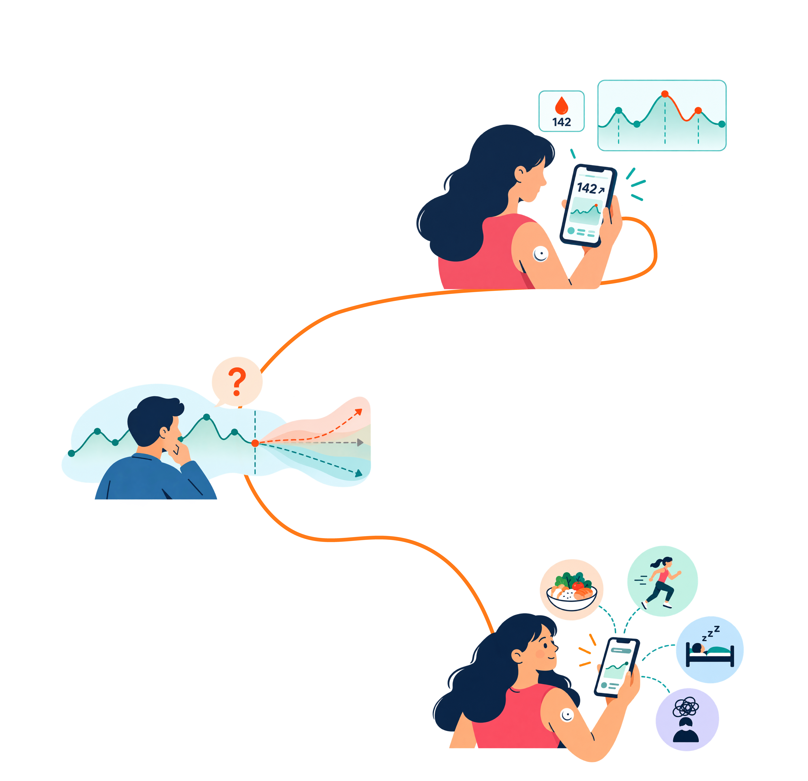
Understanding the Numbers
Does seeing a glucose reading mean understanding what it represents?
Uncertainty About What's Next
How do people experience uncertainty about their glucose levels?
Turning Information Into Action
How do people use glucose information to make decisions?
From Understanding to Anticipation
Glucose readings provide information about the present, but understanding what might happen next remains challenging. I explored how predictive insights could help people make sense of changing glucose levels.
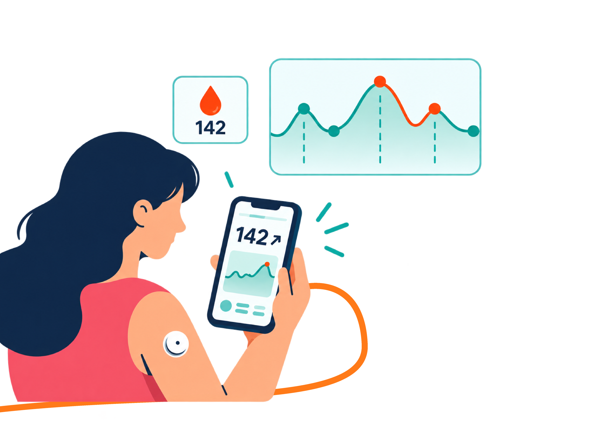
Understanding the Numbers
Glucose readings provide information, but understanding what they mean can be challenging.
Make glucose readings easier to interpret.
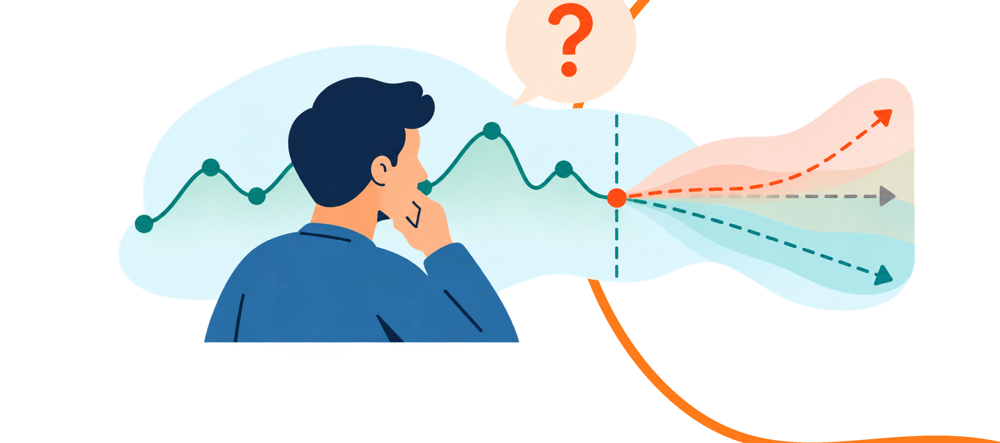
Uncertainty About What's Next
Changing glucose levels can create uncertainty about what might happen next.
Explore ways to communicate possible future trends.
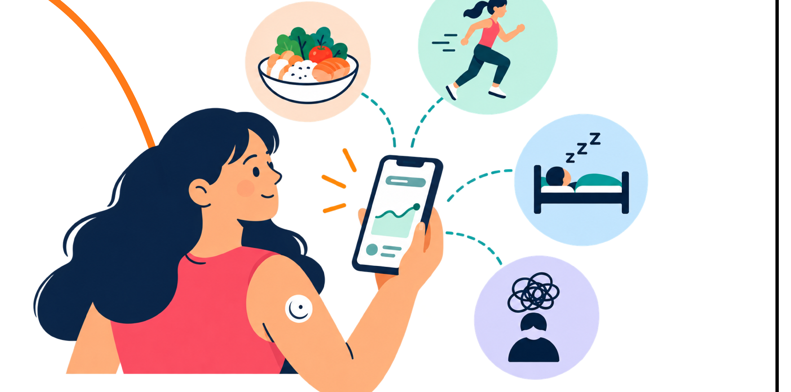
Turning Information Into Action
People need to understand their glucose information to make informed decisions.
Connect glucose insights with relevant context.
The Question That Guided My Design
How might we help people with diabetes anticipate glucose fluctuations and make more informed decisions?
This question established the guiding direction for the concept design—moving past passive historical monitoring toward proactive, calm anticipation.
Introducing GluSight
GluSight is a concept for predictive glucose monitoring that explores how anticipating potential glucose changes could help people better understand their readings and prepare for what's ahead.
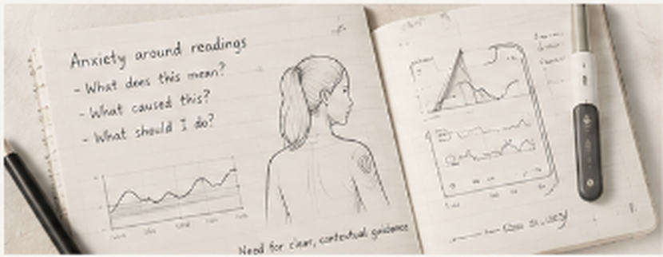
[ Early Concept Exploration ] Interrogating psychological friction around unexpected swings and the need for calm contextual guidance.
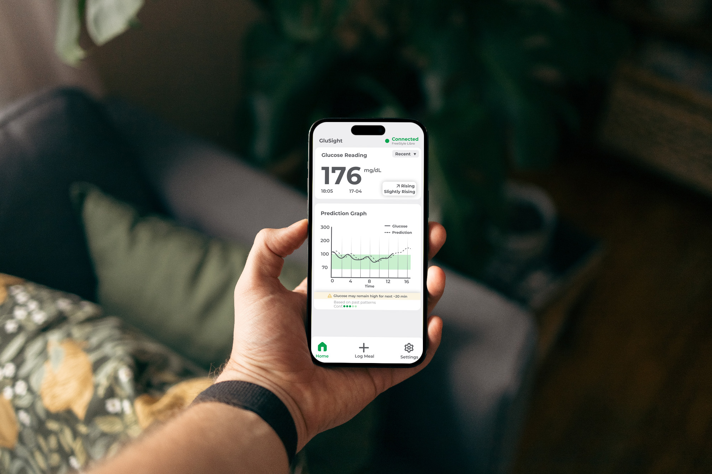
[ GluSight System ] Combining real-time telemetry, forward horizon estimates, and physical companion hardware.
Structuring the Experience
The experience brings glucose information and potential future trends together, with the aim of helping users understand their readings and explore what might happen next.
Designing the Experience
The interface explores how current glucose readings, possible future trends, and relevant context could be brought together to support a clearer understanding of glucose information.
Understanding the Present
Current glucose readings provide a snapshot of the user's glucose level. Presenting this information clearly helps users understand their current reading.
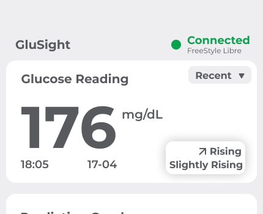
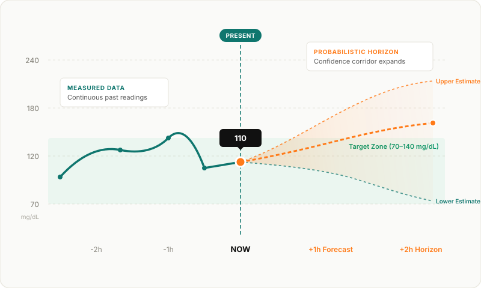
Anticipating What's Next
A possible future glucose trend could help users explore how their glucose levels may change over time. These predictions should be presented as estimates rather than certain outcomes.
Understanding the Context
Glucose levels can respond to factors such as meals, physical activity, medication, stress, and sleep. Contextual information could help users explore possible influences on changing trends.
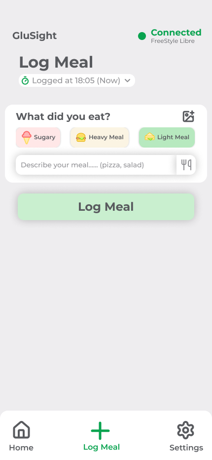
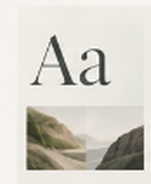
Supporting Informed Decisions
Presenting glucose information in a clearer context could help users consider their next steps. Any guidance should communicate uncertainty appropriately and avoid replacing professional medical advice.
The GluSight Experience
GluSight explores how glucose readings and potential future trends could be presented in one experience, helping users understand the information available to them and consider what may happen next.

1. Current Telemetry & Reading Status
Displays real-time blood glucose alongside velocity trend arrows and timestamped sensor connectivity.
Important Interaction: Glanceable hero typography gives instant confirmation of current glycemic state without requiring navigation through menus.
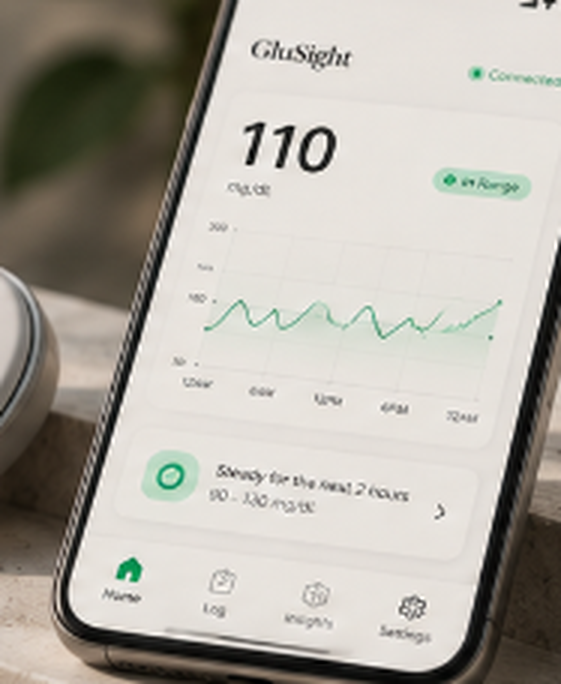
2. Calibrated Forward Forecast
Visualizes estimated trajectory 20 minutes in advance with shaded target bands and explicit model confidence indicators.
Important Interaction: Predictions are visualized as probabilistic corridors rather than rigid outcomes, preventing false certainty and alarm fatigue.
3. Frictionless Context Capture
Enables rapid tagging of meals and physical activity to help users correlate everyday habits with observed glucose swings.
Important Interaction: One-tap category chips (Sugary, Heavy Meal, Light Meal) eliminate cumbersome text entry during daily routines.
4. Adaptive Alert Thresholds
Customizes predictive high and low alert sensitivities tailored to the individual's diabetes classification and clinical targets.
Important Interaction: Smart silent mode and sensitivity calibration prevent intrusive false alarms while preserving critical warnings.
Looking Beyond Monitoring
GluSight explores how predictive glucose insights could extend the monitoring experience beyond current readings. Further work would focus on evaluating how users understand predictions, interpret uncertainty, and use these insights in everyday life.
Hardware companion concept: discreet, calm wearable telemetry.